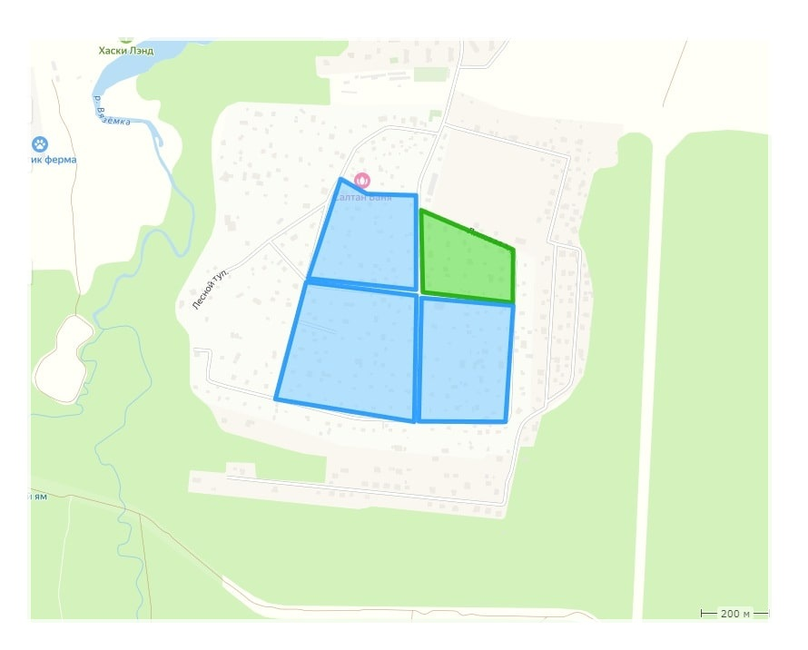

Вариант 1
Рисуем карту и зоны участоков на ней. Зоны будут кликабельны, по клику открывается попап.
Можно кликать на зоны для примера.
Минусы - картинку нельзя двигать, как карту, увеличивать или уменьшать. Для телефонов такая версия не подойдет, зоны будут слишком маленькими на мобильных экранах.

Участок 1
Участок 2
Участок 3
Участок 4
×
Информация об участке 1
Описание для участка 1.
×
Информация об участке 2
Описание для участка 2.
×
Информация об участке 3
Описание для участка 3.
×
Информация об участке 4
Описание для участка 4.